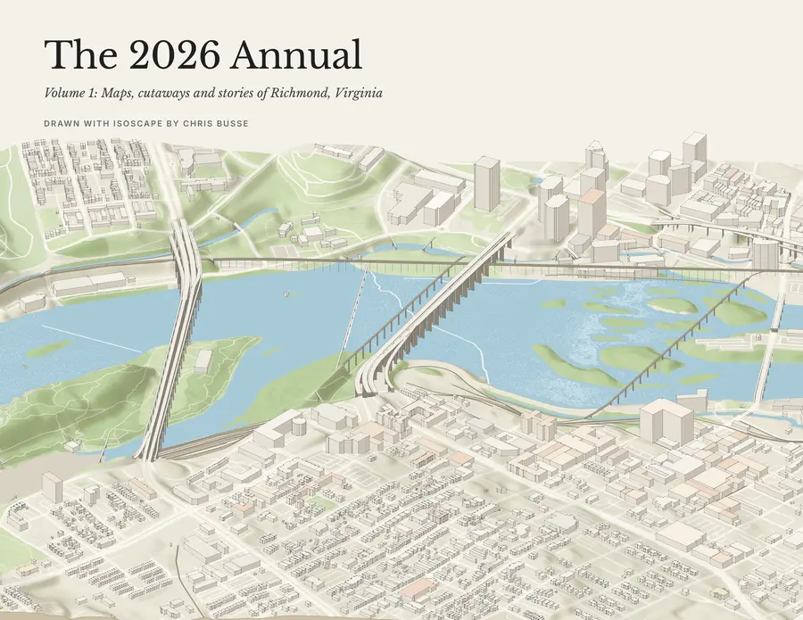

The 2026 Annual, Volume 1: Maps, cutaways and stories of Richmond, Virginia
Every printed page of Volume 1, in book order, with each plate open to zoom in the explorer.

Each section here is one printed page of Volume 1, in book order. The code at the foot of a page opens its section. Each plate links to its view in the explorer, where it can be zoomed and its sources read, and to its print where one is in the shop. The 2026 Annual says how the two volumes and their codes work.
Pages
1 · 2 · 3 · 4 · 5 · 6 · 7 · 8 · 9 · 10 · 11 · 12 · 13 · 14 · 15 · 16 · 17 · 18 · 19 · 20 · 21 · 22 · 23 · 24
Page 1: Title and contents
A note before the maps. These are the maps I drew this year. Most of them are Richmond: the river, downtown in the years the fire-insurance maps recorded, the streetcar lines of 1925, the railroads of 1943, and four buildings cut open in their own time. I drew them with isoscape, a tool I built with Claude that turns open map data and lidar into small isometric drawings. I set the rules and decide what to keep. The historic years are sketches. Buildings are approximate, and some are missing. Every plate here has its number, so you can find it again as a print, or in the explorer at isoscape.chrisbusse.com, where each one can be zoomed and its sources are listed.
Contents.
- The river, page 2
- Downtown, 1737 to 2026, page 6
- Richmond’s streetcars, 1925, page 10
- Broad Street Station, 1943, page 12
- Buildings in their time, page 14
- Beyond Richmond, page 19
- Stories, page 20
- About this book, page 24
Years in this book. 1737–2026 Downtown, the same view in twelve years 6–7; 1771–2020 Floods in Shockoe Bottom and Manchester 20–21; about 1885 The New Pump-House 18; 1886, 1925, 1950 Downtown 9; 1925 The streetcar lines and fourteen stops 10–11; 1928 The Byrd Theatre on Christmas Eve 16–17; 1937 Richmond’s graded areas 22; 1943 The railroads and Broad Street Station 12–14; about 1952 Main Street Station 15; 1952 and today Jackson Ward 23; 2026 Downtown, the James and Gwynn’s Island 2–5, 8, 19
Where the plates are. The center of each drawing, as its title block prints it.
More on the explorer: About the explorer and its data
Page 2: The river
← Page 1 · Page 3 → · All pages

RVA·08 · Richmond and the James. Downtown to Church Hill, 2026. A crop of the 24 × 10 in print.
Open it in the explorer · Buy a print ↗ · How the river is drawn · How this view was made, and its sources
More on the explorer: How the rapids are found · How the river is drawn
Page 3: The river
← Page 2 · Page 4 → · All pages
RVA·08 · Richmond and the James. continues across the spread from page 2.
Open it in the explorer · Buy a print ↗ · How the river is drawn · How this view was made, and its sources · Also on page 2
More on the explorer: How the rapids are found · How the river is drawn
Page 4: The river
← Page 3 · Page 5 → · All pages

RVA·09 · The James, I-195 to Rocketts Landing. Richmond, Virginia, 2026. Belle Isle and the falls, the bridges, Hollywood Cemetery and downtown, as it stands today.
Open it in the explorer · Buy a print ↗ · How the rapids are found · How this view was made, and its sources

RVA·09 detail · The west end, 2026. Wooded bluffs, the Powhite Parkway bridge and the Boulevard Bridge.
Open it in the explorer · Buy a print ↗ · How the rapids are found · How this view was made, and its sources
Plate facts. Ground, facing, buildings, relief, sources and print of RVA·09
More on the explorer: How the rapids are found · How the river is drawn
Page 5: The river
← Page 4 · Page 6 → · All pages

RVA·09 detail · Downtown, 2026. Towers over the river, with the Manchester and Mayo bridges.
Open it in the explorer · Buy a print ↗ · How the rapids are found · How this view was made, and its sources · Also on page 4

RVA·09 detail · Rocketts, 2026. The rail viaduct, tanks and treatment basins at the east end.
Open it in the explorer · Buy a print ↗ · How the rapids are found · How this view was made, and its sources · Also on page 4
More on the explorer: How the rapids are found · How the river is drawn
Page 6: Downtown, 1737 to 2026
← Page 5 · Page 7 → · All pages

RVA·06 · 1737, Mayo’s plan: the streets only. 1737 Mayo’s plan: the streets only
Open it in the explorer · Buy a print ↗ · Downtown through time · How this view was made, and its sources

RVA·06 · 1788, the Capitol; only what survives. 1788 the Capitol; only what survives
Open it in the explorer · Buy a print ↗ · Downtown through time · How this view was made, and its sources

RVA·06 · 1820, only what survives. 1820 only what survives
Open it in the explorer · Buy a print ↗ · Downtown through time · How this view was made, and its sources

RVA·06 · 1850, only what survives, the canal. 1850 only what survives, the canal
Open it in the explorer · Buy a print ↗ · Downtown through time · How this view was made, and its sources

RVA·06 · 1865, after the Fire; only what survives. 1865 after the Fire; only what survives
Open it in the explorer · Buy a print ↗ · Downtown through time · How this view was made, and its sources

RVA·06 · 1886, first Sanborn map. 1886 first Sanborn map
Open it in the explorer · Buy a print ↗ · Downtown through time · How this view was made, and its sources
More on the explorer: Step through the years · How a year is drawn
Page 7: Downtown, 1737 to 2026
← Page 6 · Page 8 → · All pages

RVA·06 · 1905, Sanborn map. 1905 Sanborn map
Open it in the explorer · Buy a print ↗ · Downtown through time · How this view was made, and its sources · Also on page 6

RVA·06 · 1925, Sanborn map. 1925 Sanborn map
Open it in the explorer · Buy a print ↗ · Downtown through time · How this view was made, and its sources · Also on page 6

RVA·06 · 1950, Sanborn map. 1950 Sanborn map
Open it in the explorer · Buy a print ↗ · Downtown through time · How this view was made, and its sources · Also on page 6

RVA·06 · 1970, after the turnpike. 1970 after the turnpike
Open it in the explorer · Buy a print ↗ · Downtown through time · How this view was made, and its sources · Also on page 6

RVA·06 · 1990, the expressway. 1990 the expressway
Open it in the explorer · Buy a print ↗ · Downtown through time · How this view was made, and its sources · Also on page 6

RVA·06 · 2026, today. 2026 today
Open it in the explorer · Buy a print ↗ · Downtown through time · How this view was made, and its sources · Also on page 6
More on the explorer: Step through the years · How a year is drawn
Page 8: Downtown, 1737 to 2026
← Page 7 · Page 9 → · All pages
RVA·05 · Richmond, 2026. Downtown Richmond and the James today, the last of the twelve years drawn whole.
Open it in the explorer · Buy a print ↗ · Downtown through time · How this view was made, and its sources
More on the explorer: Step through the years · How a year is drawn
Page 9: Downtown, 1737 to 2026
← Page 8 · Page 10 → · All pages
RVA·03 · Richmond, 1886. The year of the first Sanborn fire-insurance atlas.
Open it in the explorer · Buy a print ↗ · Downtown through time · How this view was made, and its sources
RVA·01 · Richmond, 1925. Between the wars.
Open it in the explorer · Buy a print ↗ · Downtown through time · How this view was made, and its sources
RVA·04 · Richmond, 1950. Before the Richmond-Petersburg Turnpike, which opened on July 1, 1958.
Open it in the explorer · Buy a print ↗ · Downtown through time · How this view was made, and its sources

RVA·07 · Richmond, Then & Now. The same view, then and now, on one sheet.
Open it in the explorer · Buy a print ↗ · Downtown through time · How this view was made, and its sources
More on the explorer: Step through the years · How a year is drawn
Page 10: Richmond’s streetcars, 1925
← Page 9 · Page 11 → · All pages
Printed on this page: The sixteen lines, and the years they ran

STC·00 · Richmond’s Streetcars, 1925: The Lines and Fourteen Stops. The map framed by its stops, each with a short history.
Open it in the explorer · Buy a print of the map alone ↗ · Buy a print of the map with every stop ↗ · The streetcars, stop by stop
More on the explorer: The streetcars, stop by stop
Page 11: Richmond’s streetcars, 1925
← Page 10 · Page 12 → · All pages

STC·01 · Westhampton Park. Westhampton line
Open it in the explorer · Buy a print of this stop ↗ · Its place on the set page, with sources

STC·02 · State Fair Grounds. spur
Open it in the explorer · Buy a print of this stop ↗ · Its place on the set page, with sources

STC·03 · Ginter Park. Lakeside line and the Ashland interurban
Open it in the explorer · Buy a print of this stop ↗ · Its place on the set page, with sources

STC·04 · Barton Heights. Lakeside line, over the First Street viaduct
Open it in the explorer · Buy a print of this stop ↗ · Its place on the set page, with sources

STC·05 · Highland Park. line, round the loop at the top of the hill
Open it in the explorer · Buy a print of this stop ↗ · Its place on the set page, with sources

STC·06 · Nine Mile Road. Venable Street line, toward Seven Pines
Open it in the explorer · Buy a print of this stop ↗ · Its place on the set page, with sources

STC·07 · Church Hill and Jefferson Park. Marshall Street and Jefferson Avenue lines
Open it in the explorer · Buy a print of this stop ↗ · Its place on the set page, with sources

STC·08 · Seventh and Broad. Every line
Open it in the explorer · Buy a print of this stop ↗ · Its place on the set page, with sources

STC·09 · Manchester. Hull Street line, over the Mayo Bridge
Open it in the explorer · Buy a print of this stop ↗ · Its place on the set page, with sources

STC·10 · Woodland Heights. Forest Hill line, down Semmes Avenue
Open it in the explorer · Buy a print of this stop ↗ · Its place on the set page, with sources

STC·11 · Forest Hill Park. Forest Hill line, end of the line
Open it in the explorer · Buy a print of this stop ↗ · Its place on the set page, with sources

STC·12 · Byrd Park. Reservoir Park line, Lakeview Avenue
Open it in the explorer · Buy a print of this stop ↗ · Its place on the set page, with sources

STC·13 · The Fan. Main Street, Floyd Avenue and Broad Street lines
Open it in the explorer · Buy a print of this stop ↗ · Its place on the set page, with sources

STC·14 · Broad and Laurel. Richmond–Ashland Railway
Open it in the explorer · Buy a print of this stop ↗ · Its place on the set page, with sources
More on the explorer: The streetcars, stop by stop
Page 12: Broad Street Station, 1943
← Page 11 · Page 13 → · All pages

BSS·00 · Broad Street Station, 1943: The Railroads and Fourteen Places. Richmond’s railroads as they ran that year, framed by fourteen places along the lines.
Open it in the explorer · Buy a print of the map alone ↗ · Buy a print of the map with every place ↗ · Broad Street Station, place by place

BSS·00 detail · Broad Street Station. The station and its loop of tracks, with the map’s own labels and numbered boxes, at about three-quarters of print size.
Open it in the explorer · Broad Street Station, place by place
More on the explorer: Broad Street Station, place by place
Page 13: Broad Street Station, 1943
← Page 12 · Page 14 → · All pages

BSS·01 · AY Tower. Where the Coast Line met the RF&P
Open it in the explorer · Buy a print of this place ↗ · Its place on the set page, with sources

BSS·02 · The State Fair grounds. North Boulevard, 1940
Open it in the explorer · Buy a print of this place ↗ · Its place on the set page, with sources

BSS·16 · Scott’s Addition. Warehouses between the RF&P and the Belt Line
Open it in the explorer · Buy a print of this place ↗ · Its place on the set page, with sources

BSS·04 · Seaboard Junction. Where the Seaboard left the RF&P
Open it in the explorer · Buy a print of this place ↗ · Its place on the set page, with sources

BSS·05 · The loop and the sheds. Nine tracks under butterfly sheds
Open it in the explorer · Buy a print of this place ↗ · Its place on the set page, with sources

BSS·06 · C.F. Sauer Company. Broad Street at Hermitage Road
Open it in the explorer · Buy a print of this place ↗ · Its place on the set page, with sources

BSS·07 · Main Street Station. The Seaboard and the C&O
Open it in the explorer · Buy a print of this place ↗ · Its place on the set page, with sources

BSS·08 · The Triple Crossing. Three railroads, three levels
Open it in the explorer · Buy a print of this place ↗ · Its place on the set page, with sources

BSS·09 · The C&O viaduct. Three miles along the river
Open it in the explorer · Buy a print of this place ↗ · Its place on the set page, with sources

BSS·10 · Hull Street Station. The Southern in Manchester
Open it in the explorer · Buy a print of this place ↗ · Its place on the set page, with sources

BSS·11 · The Belt Line bridge. The Coast Line over the James
Open it in the explorer · Buy a print of this place ↗ · Its place on the set page, with sources

BSS·12 · Hotel William Byrd. Across Broad from the station
Open it in the explorer · Buy a print of this place ↗ · Its place on the set page, with sources

BSS·13 · Broad Street Station. From over the Fan
Open it in the explorer · Buy a print of this place ↗ · Its place on the set page, with sources

BSS·14 · Pope’s front. Colonnade and dome
Open it in the explorer · Buy a print of this place ↗ · Its place on the set page, with sources
More on the explorer: Broad Street Station, place by place
Page 14: Buildings in their time
← Page 13 · Page 15 → · All pages

BSS·15 · Broad Street Station, 1943: The Cutaway. Cut down the middle from the Broad Street doors, through the portico and the White Waiting Room under the dome, to the concourse over the tracks. The east half is lifted away down to its first floor, so its rooms read as a plan.
Open the cutaway's page, part by part, with its sources (no zoomable view) · Buy a print ↗

BSS·15 detail · Under the dome. The dome (13) over the White Waiting Room (4), with the Colored Waiting Room (6) and the baggage and parcel check (8), as the sheet numbers them; the detail the shop shows of this print.
Open the cutaway's page, part by part, with its sources (no zoomable view) · Buy a print ↗
More on the explorer: How a cutaway is made
Page 15: Buildings in their time
← Page 14 · Page 16 → · All pages

MSS·01 · Main Street Station, about 1952: Cutaway. Main Street Station opened in November 1901; the Seaboard Air Line used its west side and the Chesapeake and Ohio its east. Cut from Main Street up the main stair to the trains under the shed.
Open the cutaway's page, part by part, with its sources (no zoomable view) · Buy a print ↗
More on the explorer: How a cutaway is made
Page 16: Buildings in their time
← Page 15 · Page 17 → · All pages

BYRD·01 · The Byrd Theatre, Christmas Eve 1928: Cutaway. The theatre on West Cary Street cut open on its opening night, from the Cary Street doors to the screen and across the stage. The holly border and the title’s red and green are the sheet’s own decoration.
Open it in the explorer · Buy a print ↗ · The cutaway, part by part
More on the explorer: How a cutaway is made
Page 17: Buildings in their time
← Page 16 · Page 18 → · All pages

BYRD·01 detail · The house from above. The lobby, the seats, the balcony and the oval dome with its chandelier. No plan or section of the Byrd was found, so every part rests on written accounts and photographs or is placed approximately.
Open it in the explorer · Buy a print ↗ · The cutaway, part by part · Also on page 16
More on the explorer: How a cutaway is made
Page 18: Buildings in their time
← Page 17 · Page 19 → · All pages

BPPH·01 · The New Pump-House, Richmond, about 1885: Cutaway. Canal water fell through three turbine wheels, and each wheel drove three plunger pumps that forced drinking water up to the New Reservoir. City engineer Wilfred Cutshaw put the pump house where the canal’s 20-ft fall could work the pumps.
Open the cutaway's page, part by part, with its sources (no zoomable view) · Buy a print ↗
More on the explorer: How a cutaway is made
Page 19: Beyond Richmond
← Page 18 · Page 20 → · All pages

GWY·01 · Gwynn’s Island. Mathews County, Virginia, between the Piankatank and Milford Haven. OpenStreetMap maps 417 buildings around the island, so footprints from Microsoft’s building model fill in the rest, and woods, wetlands and fields come from the USGS land cover database.
Open it in the explorer · Buy a print ↗ · How a coastline is drawn · How this view was made, and its sources
Story: Dollar General on the edge of town. Every Dollar General near a small town in six states, compared with random spots on the same roads, and every one at the edge of a small Virginia town on a map. Read the whole story, with its pictures and sources.

Bristol. 2018 · 4,592 vehicles/day

Honaker. by 2005 · 9,687 vehicles/day · busiest road into town · at a junction

Tazewell. 2015 · 2,539 vehicles/day · 2nd-busiest road into town

Springville. 2016 · 9,559 vehicles/day · busiest road into town

Rural Retreat. by 2005 · 2,891 vehicles/day · at a junction

Independence. by 2005 · 410 ft from a road with 7,791 vehicles/day

Hillsville. 2022 · 9,667 vehicles/day · 2nd-busiest road into town · at a junction

Floyd. by 2005 · 9,060 vehicles/day · busiest road into town

Luray. by 2005 · 11,563 vehicles/day · busiest road into town

Bassett. 2019 · 6,156 vehicles/day

Martinsville, west side. 2016 · 5,841 vehicles/day

Oak Level. 2017 · 14,693 vehicles/day · busiest road into town
Edge-of-town stores in Virginia. Edge-of-town stores in Virginia Twelve of the poster’s 30 maps, from Bristol to Oak Level, each 3 km across with north at the top; the yellow square is the store. The arrow points toward the middle of town; open circles are convenience stores, diamonds groceries, paler squares other Dollar General, Family Dollar and Dollar Tree stores, the dashed line the town limits and gray the built-up town. Chris Busse asked the question. This work is independent and is not affiliated with any company named here.
More on the explorer: Dollar General on the edge of town
Page 20: Stories
← Page 19 · Page 21 → · All pages
Printed on this page: Each flood as drawn
Story: Richmond's floods, 1771 to 2020. Richmond’s low ground along the James drawn in each of its great river floods from 1771 to 2020, before and after the floodwall, and in the rain of August 30, 2004, each at its recorded or estimated height on the city of its year. Read the whole story, with its pictures and sources.

Shockoe Bottom, June 1972. The city dry. The view looks north-northeast up the valley from over the James.

Shockoe Bottom, June 23, 1972. The same frame with the water of the Agnes flood at its recorded height, 35.5 feet above sea level.
Page 21: Stories
← Page 20 · Page 22 → · All pages

Manchester at the 1972 height. With today’s wall and its gates shut. The cross-hatch marks 212.8 acres, with 54 buildings, whose protection the data cannot show.

Manchester at the 1972 height. With no wall.

The 17th Street Market, August 30, 2004. Gaston’s rain, close up. Pin A marks where most of the water came together; the hatch at the right stands for the higher reports.

Gaston’s rain. Storm totals in inches, 8 a.m. August 30 to 2 a.m. August 31, 2004, with the Shockoe Creek watershed in red.
August 30, 2004. Over the land that drains to the Bottom, about 12 square miles, Gaston’s rain averaged about 10 inches by the series’ reading of the weather radar corrected to rain gauges, with a range of 8.6 to 11.6 inches across the estimates.
Page 22: Stories
← Page 21 · Page 23 → · All pages
Printed on this page: The four grades, measured
Story: Redlining in Richmond, 1937. In 1937 a federal agency, the Home Owners’ Loan Corporation, graded Richmond’s residential areas from A to D to rate what it called the “security” of each for mortgage lending. The story draws that map on the ground it graded. Read the whole story, with its pictures and sources.

Richmond, 1937. From the West End at the left to Church Hill at the right, tinted with the grade the agency gave each residential area.

A5 and D1, 1937 and today. Windsor Farms (A5) and D1 (Jackson Ward, Gilpin, Carver and Navy Hill) at one scale, 2.6 km of ground across each panel, 1937 above and today below.
Page 23: Stories
← Page 22 · Page 24 → · All pages
Printed on this page: The 1952 count
Story: Jackson Ward before I-95. Jackson Ward drawn building by building from the Sanborn fire-insurance maps of 1925 and 1952, on an estimate of the ground before the highway, with the same blocks about a year after the Richmond–Petersburg Turnpike opened and today. Read the whole story, with its pictures and sources.

Jackson Ward, 1952. Seen from the south, Belvidere Street to 7th Street. Hatched blocks are where no building was traced.

Jackson Ward, today. The same frame. The trench crosses the ward, and bridges carry some of the old streets across.

What was cleared, 1952. About 447 building outlines on the 1952 Sanborn sheets within 15 m of today’s roadway, 299 of them dwellings or flats, drawn alone.
Page 24: About this book
← Page 23 · Volume 2 → · All pages
Printed on this page: Print sizes
About this book. Drawn with isoscape by Chris Busse; made in code with Claude. The maps were drawn and released as prints in November 2026; each plate number is the design’s permanent catalog number. Every map can be zoomed and checked against its sources at isoscape.chrisbusse.com. isoscape is free and open source. The text was drafted with Claude, Anthropic’s AI, from the project’s pages and records, and approved by Chris Busse. The artist statement on the explorer says how the two work together.
Plates in this book. Each opens the page it is printed on.
- RVA·08 Richmond and the James, page 2
- RVA·09 The James, I-195 to Rocketts Landing, page 4
- RVA·06 Richmond, 1737–2026, page 6
- RVA·05 Richmond, 2026, page 8
- RVA·01 Richmond, 1925, page 9
- RVA·03 Richmond, 1886, page 9
- RVA·04 Richmond, 1950, page 9
- RVA·07 Richmond, Then & Now, page 9
- STC·00 Richmond's Streetcars, 1925: The Lines and Fourteen Stops, page 10
- STC·01 Westhampton Park, Richmond Streetcars 1925, page 11
- STC·02 State Fair Grounds, Richmond Streetcars 1925, page 11
- STC·03 Ginter Park, Richmond Streetcars 1925, page 11
- STC·04 Barton Heights, Richmond Streetcars 1925, page 11
- STC·05 Highland Park, Richmond Streetcars 1925, page 11
- STC·06 Nine Mile Road, Richmond Streetcars 1925, page 11
- STC·07 Church Hill and Jefferson Park, Richmond Streetcars 1925, page 11
- STC·08 Seventh and Broad, Richmond Streetcars 1925, page 11
- STC·09 Manchester, Richmond Streetcars 1925, page 11
- STC·10 Woodland Heights, Richmond Streetcars 1925, page 11
- STC·11 Forest Hill Park, Richmond Streetcars 1925, page 11
- STC·12 Byrd Park, Richmond Streetcars 1925, page 11
- STC·13 The Fan, Richmond Streetcars 1925, page 11
- STC·14 Broad and Laurel, Richmond Streetcars 1925, page 11
- BSS·00 Broad Street Station, 1943: The Railroads and Fourteen Places, page 12
- BSS·01 AY Tower, Broad Street Station 1943, page 13
- BSS·02 The State Fair grounds, Broad Street Station 1943, page 13
- BSS·04 Seaboard Junction, Broad Street Station 1943, page 13
- BSS·05 The loop and the sheds, Broad Street Station 1943, page 13
- BSS·06 C.F. Sauer Company, Broad Street Station 1943, page 13
- BSS·07 Main Street Station, Broad Street Station 1943, page 13
- BSS·08 The Triple Crossing, Broad Street Station 1943, page 13
- BSS·09 The C&O viaduct, Broad Street Station 1943, page 13
- BSS·10 Hull Street Station, Broad Street Station 1943, page 13
- BSS·11 The Belt Line bridge, Broad Street Station 1943, page 13
- BSS·12 Hotel William Byrd, Broad Street Station 1943, page 13
- BSS·13 Broad Street Station, Broad Street Station 1943, page 13
- BSS·14 Pope's front, Broad Street Station 1943, page 13
- BSS·16 Scott's Addition, Broad Street Station 1943, page 13
- BSS·15 Broad Street Station, 1943: The Cutaway, page 14
- MSS·01 Main Street Station, about 1952: Cutaway, page 15
- BYRD·01 The Byrd Theatre, Christmas Eve 1928: Cutaway, page 16
- BPPH·01 The New Pump-House, Richmond, about 1885: Cutaway, page 18
- GWY·01 Gwynn's Island, page 19
Online. Each page has a code that opens that page on the explorer: every plate at full zoom, its sources and its print. This volume’s pages are at isoscape.chrisbusse.com/B/1-01 to 1-24, and Volume 2’s at /B/2-01 to 2-24.
More on the explorer: Artist statement · About, credits and licenses · Data
Drafted and assembled in code with Claude for Chris Busse, from the books' own files. The artist statement says how the two work together.